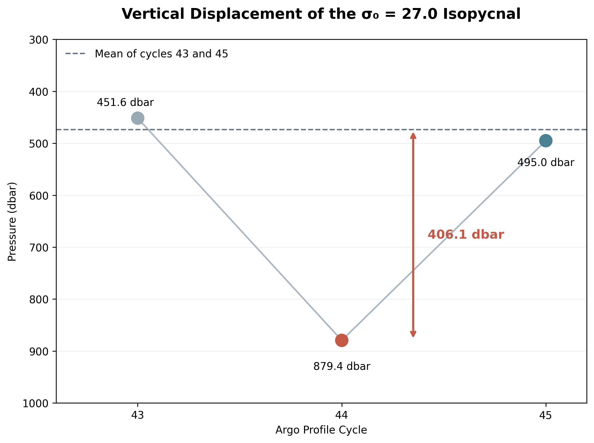
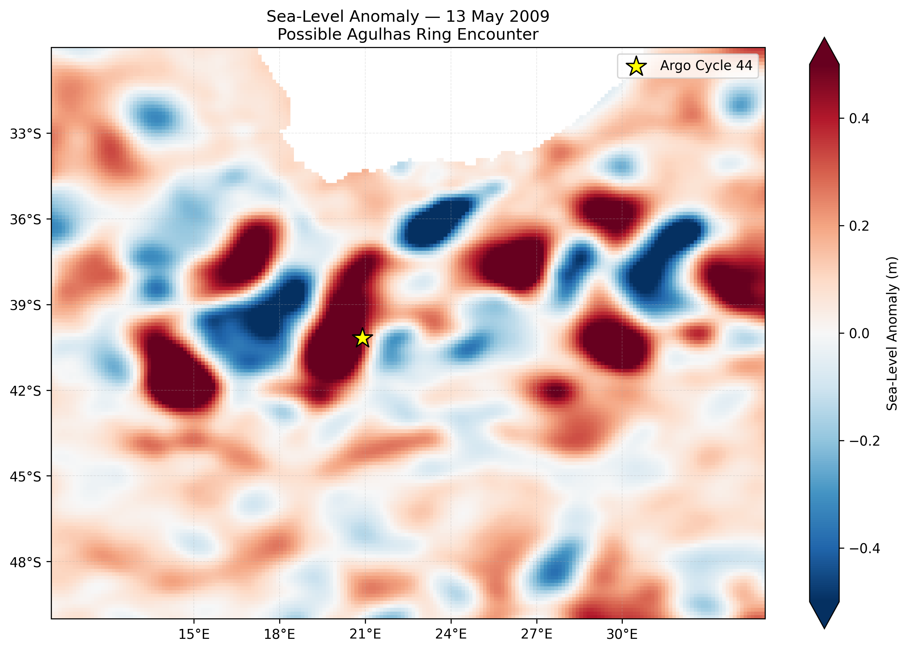
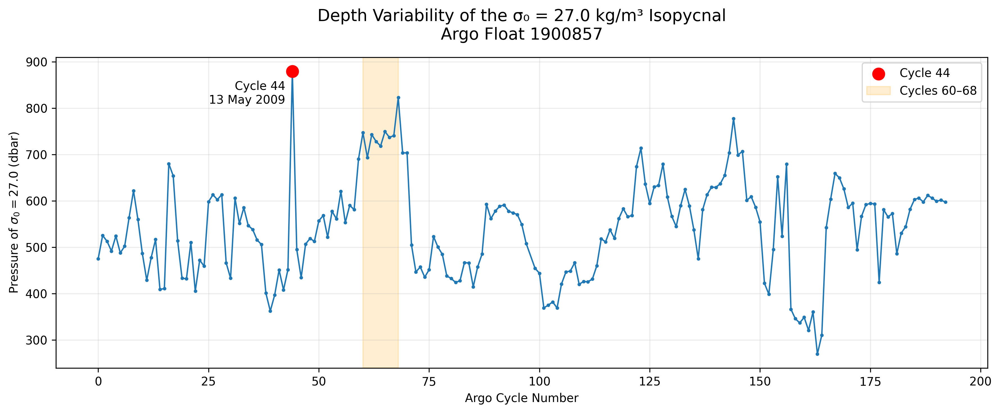
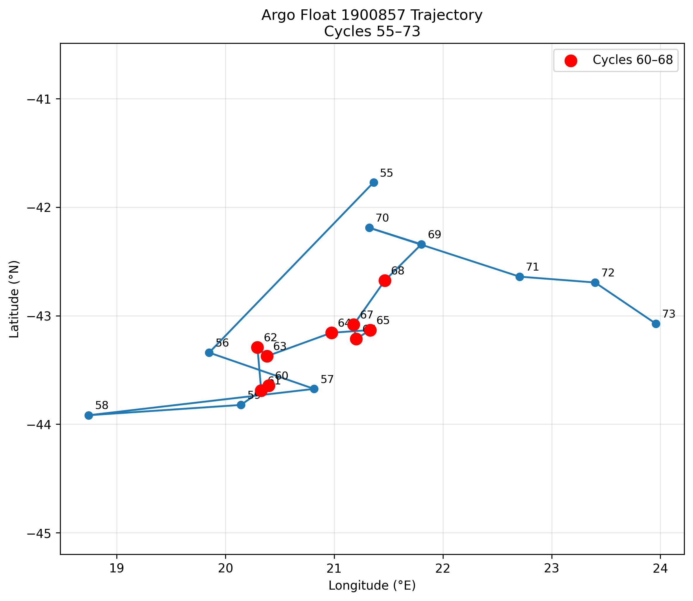

It Began with an Unexpected Observation
While examining temperature, salinity, and density profiles from Argo float 1900857, I encountered a profile that differed substantially from those recorded immediately before and after it.
On May 13, 2009, the float measured unusually warm and saline water at intermediate depths. At approximately 500 dbar, Conservative Temperature was more than 6°C higher than in neighboring profiles.
Was this a measurement error, a change in water mass, or evidence of a larger oceanographic feature?
To investigate, I examined the quality of the measurements, compared vertical density structures, and turned to satellite observations of sea-surface height.
The initial satellite evidence suggested a possible connection to mesoscale circulation, but did not establish that the float was inside an eddy.
Further examination of the float's trajectory revealed a second, more persistent hydrographic anomaly later in 2009. This led to a systematic comparison with satellite-tracked anticyclones in the Agulhas region.
By combining independent datasets and quantitative spatial analysis, I identified a tracked anticyclone whose effective boundary repeatedly encompassed the float's observed positions.
The following sections document how that conclusion was reached, including the analyses that supported it and the uncertainties that remain.
Following the Evidence
The investigation developed through seven stages, moving from an unexpected measurement to an independently supported association with a tracked anticyclone.
From Exploration to Anomaly Detection
The investigation began with an examination of the intermediate-depth salinity minimum recorded by Argo float 1900857 between 2008 and 2013. I plotted the pressure at which the minimum salinity occurred in each profile to examine how its vertical position changed along the float's trajectory.
The resulting time series revealed substantial variability, with the salinity minimum occurring at markedly different pressures across successive observations. This raised a question: which profiles exhibited the largest changes?

Identifying the Largest Changes
To identify unusual observations systematically, I calculated the difference in salinity-minimum pressure between successive profiles and ranked the results by absolute magnitude.
Cycle 44, recorded on 13 May 2009, exhibited the largest change in the dataset: the salinity minimum occurred at 1,138 dbar, approximately 500 dbar deeper than in the preceding profile. Just ten days later, cycle 45 recorded a 400 dbar decrease.

These results identified cycle 44 as a candidate for further investigation. Although a large change in salinity-minimum pressure does not establish its physical cause, it provides an objective basis for selecting an unusual observation.
Examining the Hydrographic Structure
I next compared the temperature, salinity, and potential-density profiles from cycles 43, 44, and 45. This comparison revealed that cycle 44 differed substantially from its neighboring profiles, particularly at intermediate depths.

Why Was This Unusual?
The anomaly was not limited to temperature. Cycle 44 also exhibited elevated salinity and reduced potential density at comparable pressures, indicating a substantial difference in hydrographic structure.
However, an unusual profile does not necessarily indicate an oceanographic event. Before interpreting the measurements, I needed to establish whether the observations were reliable.
Next question: Could the measurements be wrong?
Could the Measurements Be Wrong?
Before interpreting the anomalous profile as evidence of an oceanographic feature, I needed to determine whether the measurements were reliable.
An unusual temperature or salinity measurement could result from an instrument problem, data-processing error, or an isolated measurement artifact. I therefore examined the Argo quality-control flags and compared the vertical structure of cycle 44 with its neighboring profiles.
Checking the Argo Quality Flags
The quality-control assessment indicated that the temperature, salinity, and pressure observations examined for cycle 44 were assigned Argo QC flag 1, indicating good data.
This did not independently establish the physical explanation for the anomaly, but it provided no immediate quality-control reason to reject the profile.
Examining the Vertical Structure
The anomaly extended through a substantial portion of the water column rather than appearing as a single isolated measurement.
To investigate the density structure, I compared the pressure of the same potential density surface across cycles 43, 44, and 45.
The potential density anomaly surface σ₀ = 27.0 kg/m³ occurred at approximately 879 dbar in cycle 44, around 406 dbar deeper than its average position in the neighboring profiles.

What Did This Establish?
The quality-control results and coherent vertical structure supported treating cycle 44 as a plausible oceanographic observation rather than dismissing it as an isolated measurement artifact.
However, quality-control flags cannot rule out every possible measurement problem, and the density displacement alone could not identify the process responsible.
Next question: What physical process could produce this structure?
Searching for a Physical Explanation
The measurements appeared credible, but their physical explanation remained uncertain. What process could produce unusually warm, saline, and relatively low-density water at intermediate depths, accompanied by a substantial depression of density surfaces?
A Possible Mesoscale Eddy
One possibility was that the float had encountered an anticyclonic mesoscale eddy. These rotating ocean features can redistribute water masses and alter the vertical structure of the water column.
Warm-core anticyclonic eddies commonly exhibit depressed isopycnals, allowing relatively warm water to extend deeper than in surrounding waters. This provided a plausible explanation for the hydrographic structure observed in cycle 44.
Why the Agulhas Region Matters
The float was operating in the Agulhas region of the southeastern Atlantic, where energetic currents, frontal interactions, and mesoscale eddies produce substantial hydrographic variability.
Eddies originating from the Agulhas system can transport relatively warm, saline Indian Ocean water into the Atlantic. An encounter with such a feature could potentially explain the unusual properties recorded by the float.
From Hypothesis to Evidence
The hydrographic observations were consistent with an eddy encounter, but they were not sufficient to confirm one. Other processes, including frontal crossings and water-mass variability, could also produce abrupt differences between successive profiles.
To investigate the eddy hypothesis, I turned to satellite altimetry. Sea-level anomaly measurements provide an independent way to examine mesoscale circulation near the float's position.
Searching for Satellite Evidence
The hydrographic structure observed in cycle 44 suggested a possible anticyclonic eddy encounter. To investigate this hypothesis, I examined satellite-derived sea-level anomaly observations near the float's position on 13 May 2009.
Examining Sea-Level Anomalies
Satellite altimetry measures variations in sea-surface height that can provide information about mesoscale ocean circulation. In the Southern Hemisphere, anticyclonic eddies are commonly associated with positive sea-level anomalies.
Satellite altimetry revealed that cycle 44 occurred within a region of elevated sea-surface height. The surrounding geostrophic velocity field suggested complex mesoscale circulation, but the spatial structure did not provide an unambiguous eddy boundary.

Was the Float Inside an Eddy?
I next compared the float's position with a nearby anticyclonic eddy identified in a satellite-derived eddy-tracking atlas.
The candidate eddy's center was approximately 125 km from the float, while its reported effective radius was approximately 117 km. The float therefore lay slightly beyond this radius.
Although the observations suggested that the float was near an anticyclonic feature, they did not establish that it was inside the eddy's boundary. The hydrographic anomaly could also have been influenced by a nearby front, an eddy periphery, or another mesoscale process.
Investigating the Density Structure
To examine the anomaly more closely, I compared the vertical positions of three potential-density surfaces in cycle 44 with their positions in the neighboring profiles.
All three isopycnals occurred at substantially greater pressures in cycle 44, with differences of approximately 316–406 dbar relative to the neighboring-profile means. The σ₀ = 27.0 kg/m³ surface reached approximately 879 dbar, its greatest pressure in the entire float record.
These results strengthened the evidence for an unusual vertical density structure, but they did not independently establish the presence of an eddy.
Following the Candidate Anticyclone
I also investigated the satellite-derived eddy-tracking records to determine whether the nearby anticyclone could be traced through time.
The candidate feature was associated with a branching tracking network extending back to January 2009. This indicated that the satellite observations were part of a more complex history of tracked mesoscale features, rather than an isolated observation.
However, a branching tracking network does not necessarily represent the uninterrupted lifetime of one coherent eddy. Nor did the available spatial evidence confirm that cycle 44 occurred within the candidate anticyclone's boundary.
Looking Beyond Cycle 44
Cycle 44 remained the most extreme individual observation, but its physical explanation was unresolved.
I therefore expanded the analysis to examine the vertical position of the σ₀ = 27.0 kg/m³ isopycnal throughout the float's record.
This revealed another unusual pattern: a prolonged interval of depressed isopycnals during late 2009. Unlike cycle 44, the anomaly persisted across multiple successive profiles.
A Second Event
Looking Beyond Cycle 44
Although cycle 44 exhibited the deepest position of the σ₀ = 27.0 kg/m³ isopycnal in the entire float record, the physical explanation for this isolated anomaly remained uncertain.
To investigate whether similar conditions occurred elsewhere, I examined the vertical position of this isopycnal across the complete observational record. A second pattern emerged between cycles 60 and 68: a sustained interval of unusually deep isopycnals, rather than a single extreme observation.

The persistence of this second anomaly raised a new question: did these profiles share the same warm, saline, low-density characteristics observed during cycle 44?
Comparing the Hydrographic Observations
The numerical results confirmed that the second anomaly was not limited to a single observation. Of the ten deepest positions of the σ₀ = 27.0 kg/m³ isopycnal in the 192-cycle record, eight occurred between cycles 60 and 68.
At approximately 500 dbar, these profiles also exhibited elevated Conservative Temperature and Absolute Salinity, accompanied by lower potential density, resembling the hydrographic characteristics observed in cycle 44.
| Cycle | CT (°C) | SA (g/kg) | σ₀ (kg/m³) |
|---|---|---|---|
| 43 | 6.298 | 34.553 | 27.034 |
| 44 | 13.414 | 35.445 | 26.524 |
| 45 | 6.666 | 34.579 | 27.006 |
| 60 | 11.132 | 35.138 | 26.732 |
| 62 | 10.963 | 35.104 | 26.735 |
| 64 | 11.462 | 35.208 | 26.724 |
| 66 | 11.077 | 35.133 | 26.737 |
| 68 | 11.615 | 35.092 | 26.606 |
The similarity suggested that both events might involve related physical processes, although the observations did not establish that the same eddy was responsible.
Examining the Float's Trajectory
I next examined the float's geographic positions during cycles 55–73 to determine how its movement changed before, during, and after the second anomaly.

The combination of persistent hydrographic anomalies and the float's geographic behavior motivated a new investigation using satellite altimetry.
I selected 19 November 2009, corresponding to cycle 63, to examine whether a mesoscale feature was present near the float during the anomalous interval.